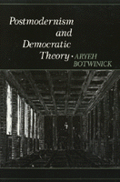

<body bgcolor="#FFFFFF" text="#000000" link="#0000FF" vlink="#CC0000" alink="#CC0000"><center><hr width="350" size="1" align="center" noshade>A discussion of the political and economic dimensions of postmodernism<hr width="350" size="1" align="center" noshade><p><a href="https://cdcshoppingcart.uchicago.edu/Cart/ChicagoBook.aspx?ISBN=9780877229971&&PRESS=temple" target="_top">Buy this book!</a> | <a href="https://cdcshoppingcart.uchicago.edu/Cart/Cart.aspx?PRESS=temple" target="_top">View Cart</a> | <a href="https://cdcshoppingcart.uchicago.edu/Cart/Cart.aspx?PRESS=temple" target="_top">Check Out</a></p><p></p></center><!--none//--><h1>Postmodernism and Democratic Theory</h1>
<h3>Aryeh Botwinick</h3>
<P>cloth 0-87722-997-X $59.95, Mar 93, <FONT COLOR=#990033>Out of Print</FONT>
<BR> 288 pp
6x9
</P><BLOCKQUOTE><I>"</I>Postmodernism and Democratic Theory<I> fully lives up to Botwinick's reputation, his high standards of scholarship, and his acute sensitivity to ongoing debates in social and political philosophy. It seeks to buttress Botwinick's conception of agnosticism as a self-critical skepticism, now with application to democratic theory on a global scale. The book is timely, competently argued, and lucidly written."</I>
<br>&#151<b>Fred Dallmayr</b>, University of Notre Dame<I></I></BLOCKQUOTE>
<p>In <I>Postmodernism and Democratic Theory</I>, Aryeh Botwinick is concerned with defining postmodernism and exploring its political-economic dimensions. Previous attempts at definition have foundered because the theory has a built-in incoherence: in their rejection of reasoned argument, postmodernists must rely on reasoned argument to make their case. This issue of "self-referentialism" is pivotal, for example, in Habermas's criticism of the postmodernists. But Botwinick shows that postmodernism can be coherently conceived as a "generalized agnosticism," which remains open to all possibilities&#151including the possibility of its own falsity. In developing this view of postmodernism, he applies it to the work of a whole range of both classic and contemporary political and economic thinkers&#151from Plato, Hobbes, Rousseau, Freud, and Wittgenstein to Habermas, Lyotard, and Strauss&#151and attempts to plot the transition between modernist and postmodernist democratic society.
<BR>&nbsp;<h2>Reviews</h2>
<p><I>"The breadth and originality of the philosophical insights and comparisons in </I>Postmodernism and Democratic Theory<I> are impressive. The author has an illuminating grasp of the historical tradition."</I>
<br>&#151<b>James B. Wilbur</b>, Professor of Philosophy, College at Geneseo, SUNY
<p><i>"He calls for a revolution in our notion of the kind of thinking appropriate to democratic politics&#151for nothing less than a different, if more difficult and overtly political, kind of coherence."</i>
<br>&#151<b><i>Social Theory and Practice</i></b>
<BR>&nbsp;<h2>Contents</h2><P>
<p>Preface
<br>1. Introduction
<p><b>Part I: Fixing the Theoretical and Intellectual-Historical Contours of a Generalized Agnosticism</b>
<br>2. An Epistemological Model for Postmodernism
<br>3. Liberalism versus Communitarianism: Epistemological and Sociological Perspectives
<br>4. Rousseau and the Discovery of Reflexivity
<br>5. Habermas and Reflexivity: The Modernist versus Postmodernist Debate in Metatheoretical Perspective
<br>6. Strauss and Reflexivity
<br>7. Freud: A Postmodernist Reconciliation of Theory and Therapy
<br>8. Wittgenstein's Postmodernist Theory of Action and Conceptualizations of the Relationship between Past and Present
<br>9. Thoughts on Lyotard's Postmodernism
<p><b>Part II: Between Hobbes and Plato: Envisioning the Transition Between Modernist and Postmodernist Democratic Society</b>
<br>10. Power and the Political and the Roles of "Distance" and Leadership in Plato
<br>11. Moral Psychology, Power, and the Political in Hobbes
<br>12. Abundance and Scarcity: Spatial and Temporal Politics
<br>13. Hobbes's Metaphysics, Participation, and Scarcity
<br>14. Justification of Basic Premises in Plato and Hobbes
<br>15. Conversation: The Ethics of Participation
<p>Notes
<br>Bibliography
<br>Index
</P><BR>&nbsp;<H2>About the Author(s)</H2>
<P><b>Aryeh Botwinick</b> is Professor of Political Science at Temple University and the author of numerous other books, including <I><A HREF="592_reg.html" TARGET="_top">Skepticism and Political Participation</A></I> and <I><A HREF="477_reg.html" TARGET="_top">Power and Empowerment: A Radical Theory of Participatory Democracy</A></I> (co-authored with Peter Bachrach) both published by Temple.</P>
<BR><H2>Subject Categories</H2>
<p><A HREF="/tempress/political.html" TARGET="_top">Political Science and Public Policy</a>
</p>
<p align="center"><a href="https://cdcshoppingcart.uchicago.edu/Cart/ChicagoBook.aspx?ISBN=9780877229971&&PRESS=temple" target="_top">Buy this book!</a> | <a href="https://cdcshoppingcart.uchicago.edu/Cart/Cart.aspx?PRESS=temple" target="_top">View Cart</a> | <a href="https://cdcshoppingcart.uchicago.edu/Cart/Cart.aspx?PRESS=temple" target="_top">Check Out</a></p><p><font face="Arial" size="1"><a href="copyright.html" onMouseOver="window.status='Web Copyright Policy';return true;" onMouseOut="window.status=''" title="Web Copyright Policy">&copy;</a> 2015 <a href="http://www.temple.edu" target="new" onMouseOver="window.status='Link to Temple University home page';return true;" onMouseOut="window.status=''" title="Link to Temple University home page">Temple University</a>. All Rights Reserved. http://www.temple.edu/tempress/titles/1018_reg.html</font></p>